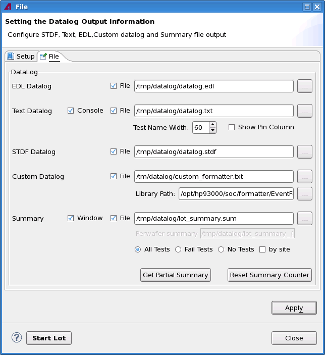

Setting the data log output information in the Datalog Control tool
About this task
The data log can be output to an EDL file, a STDF file, a text file, a custom data log file or the data log console. The lot summary file or partial lot summary file can be generated. This is done in the File tab of Datalog Control tool.

Before you begin
Make sure the Datalog Control tool is started.
Procedure
Results
The data log output settings are done. The changes will take effect since the next execution of the testflow.
Functional changes
- Introduced in SmarTest 7.2.0
- SmarTest 7.2.0: in patch 2, supports per wafer lot summary file in TCCT 1.1
- SmarTest 7.2.1: New option Test Name Width and Show Pin Column to control the text data log files in TCCT 1.3
- SmarTest 7.2.1: All the variables defined in the newlotuiconfiguration.xml file can be used in the data log file name in TCCT 1.3
- SmarTest 7.2.2: Supports logging the EDL data log file in TCCT 1.4
- SmarTest 7.2.2: Supports logging the content with customized data log formatter in TCCT 1.4
- SmarTest 7.4.5: Removed stdf_generation flag